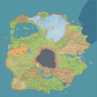

A região de Paldea é o cenário principal dos jogos Pokémon Scarlet e Violet, inspirada na Península Ibérica. Paldea combina cidades modernas, vilarejos históricos, praias, montanhas e vastos campos abertos, oferecendo um mundo totalmente aberto e explorável. O jogador inicia sua jornada em Mesagoza, recebendo seu primeiro Pokémon do Professor Sada ou Turo — Sprigatito, Fuecoco ou Quaxly — que define a estratégia inicial. Paldea introduz o conceito de jogo totalmente aberto, permitindo explorar o mapa livremente desde o início. Paldea possui cidades e ginásios inovadores, cada uma apresentando Academias e Desafios de Treinamento, ao invés do sistema tradicional de ginásios. Os jogadores enfrentam líderes que desafiam suas habilidades de combate e estratégia, incentivando diferentes estilos de jogo.
